To understand the composition and structure of atmosphere
To differentiate weather and climate
To correlate the factors influencing weather and climate
To recognize the classification of Clouds, wind and rainfall
Earth is a unique planet where life is found. Can you imagine life on the earth without air? No. The air is essential for the survival of all forms of life. The blanket of air that surrounds the Earth is called the atmosphere. It is held close to the earth by gravitational attraction.
Atmosphere is a mixture of gases, water vapour and dust particles in different proportions. Nitrogen (78 percent ) and Oxygen (21 percent ) are permanent gases of the atmosphere. They constitute 99 percent of the total composition and their percentages always remain the same without any change. The remaining one percentage is occupied by Argon (0.93 percent), Carbon-di-oxide, (0.03 percent ), Neon (0.0018 percent ), Helium (0.0005 percent ), Ozone (0.00006 percent ) and Hydrogen (0.00005 percent ). Krypton, Xenon and Methane are also present in trace. Water vapour (0 - 0.4 percent ) is also found in the atmosphere, which plays an important role in predicting weather phenomenon. The other solid particles present in the atmosphere includes dust particles, salt particles, pollen grains, smoke, soot, volcanic ashes etc.,
In 1772 CE Daniel Rutherford discovered Nitrogen in atmosphere. In 1774 Joseph priestly discovered oxygen in atmosphere
Oxygen is most important for living organisms. Carbondi oxide absorbs heat and keeps the atmosphere warm by insulation and radiation. Nitrogen acts as a diluent and is chemically inactive. Ozone helps in protecting the earth from harmful ultra violet radiation. The solid particles in the atmosphere acts as nuclei on which water vapour condense to form precipitation.
The atmosphere is thick near the earth surface and thins out until it eventually merges with space. The five atmospheric layers are: Troposphere, stratosphere, Mesosphere, Thermosphere and Exosphere.
The lowest layer of the atmosphere is the troposphere. The Greek word ‘tropos’ means ‘turn’ or change. The layer extends up to 8 kilometers at the poles and up to 18 kilometers at the Equator. The temperature decreases with increasing height. Almost all weather phenomenon take place in this layer. Hence it is called weather making layer. The upper limit of the troposphere is called as tropopause.
Stratosphere lies above the troposphere. It extends to a height of about 50km above earth surface. Since this layer is a concentration of ozone molecules, it is also referred as ozonosphere. The temperature increases with increase in height in this layer. Large jet planes normally fly here. The upper limit of the stratosphere is called as stratopause.
Mesosphere extends between 50km and 80km. The temperature decreases with increasing height. Most of the meteors nearing the earth, get burned here. The upper most limit of the mesosphere is the mesopause.
Thermosphere exists above the mesosphere. It extends to about 400 kilometer. The composition of gases in the lower thermosphere is more or less uniform, hence it is called “Homosphere”. The upper portion of the thermosphere has uneven composition of gases and hence it is referred as “Heterosphere”. Here the temperature increases with increasing height. Ionosphere is a layer of the thermosphere that contains Ions and free electrons. Radio waves transmitted from earth are reflected back to earth from this layer.
Magnetosphere lies beyond the exosphere. It is the earth's magnetic belt, where proton and electrons, coming out from the sun are trapped by the earth. The magnetic field extends to around 64,000 kilometer above the Earth.
The uppermost layer of the atmosphere is called exosphere. This layer is extremely rarefied with gases and gradually merges with the outer space. This zone is characterized by aurora Australis and aurora borealis.
Auroras are cosmic glowing lights produced by a stream of electrons discharged from the Sun's surface due to magnetic storms that are seen as unique multicoloured fireworks hanging in the polar sky during midnight.
Weather and climate are the terms that are related to the atmospheric conditions. Weather denotes the way the atmosphere behaves every day and climate reveals the average of weather conditions over relatively long periods of time. The difference between the two may be clearly understood with the following table.
Why is Troposphere called as weather making layer?
Distance from the equator
Altitude
Nearness to the sea
Nature of the prevailing winds
Mountain barrier
Cloud cover
Ocean currents
Natural vegetation
The sun’s rays fall vertically on the equator. The rays are inclined on the regions away from the equator and near the poles due to the spherical shape of the earth. The vertical rays heat up the earth more than the inclined rays. Thus, the places near the equator are warmer than the places which are far away from the equator.
Connect the following places with their latitudes and the temperature observed
Partly sunny |
1. Weather is the study of atmospheric conditions for short duration over small areas. |
1. Climate is the study of the average weather condition observed over a long period of time for a larger area. |
Warm Climate
|
Windy
|
2. The weather changes very often ; hour to hour and day to day |
2. Climate is more or less permanent and remains the same always. |
Monsoon
|
Rainy
|
3. A place can experience diff erent types of weather conditions in a day. Example, A day with hot morning can have a rainy noon. |
3. A place can experience almost the same type of climate |
Wet Climate
|
Chilly
|
4. Weather data is collected every day in the observatories |
4. Climate is average of the weather data. |
Extreme Climate
|
Stormy 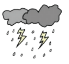
|
5. Study of weather is called Meteorology |
5. Study of climate is called Climatology |
Cyclone
|
City |
Latitude |
Temperature [In August] |
Kanyakumari – Tamil Nadu |
|
|
Delhi-India |
|
|
Moscow – Russia |
|
|
Altitude refers to the height above mean sea level. The temperature decreases at the rate of 6.5°C per kilometer of height. This is called Normal lapse rate. So, places at the higher altitude have a lower temperature.
Connect the following places with Altitude and the temperature
City |
Altitude (height) |
Temperature [In May] |
MaduraiTamilnadu |
|
|
Uthagamandalam – Tamilnadu |
|
|
Simla -Himachal Pradesh |
|
|
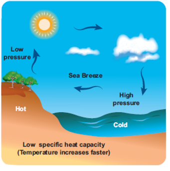
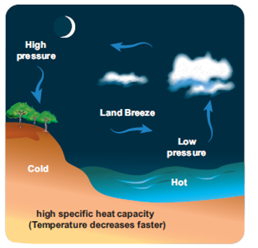
The climate of a place, varies according to its nearness to the sea. Places near the coast experience equable climate due to the influence of the winds from the sea. Places located inland, far from the sea, does not experience the moderating influence of the sea, such places experience a continental type of climate.
During the day, the land masses get heated more rapidly than the oceans. Heated air ascends and this causes low pressure on the adjoining ocean. Therefore, the wind blows from ocean to land in the afternoon. This is called sea breeze. Sea breeze helps in reducing the temperature of the coastal region especially during the summer season.
During the night, the land cools more rapidly than the ocean. Cold air sinks and forms high pressure. The wind blows from land to sea during the night, this is called land breeze.
The wind changes the climate of a place based on, from where they blow. When wind blows from a warm region, it makes the place warm and cold, when blows from a colder region. The on-shore winds cause rainfall making the place cool whereas the off-shore winds bring dry weather.
The location of the mountains influence the climate of a place. The mountain chains act as natural barrier for the wind. Sometimes they prevent the entry of cold winds into the country or the escape of monsoon winds, thus having a great influence over the climate.
The windward is the side of a mountain which faces the prevailing wind. It receives heavy rainfall.
The leeward side of the mountain is the side sheltered from the wind. It receives very less rainfall.
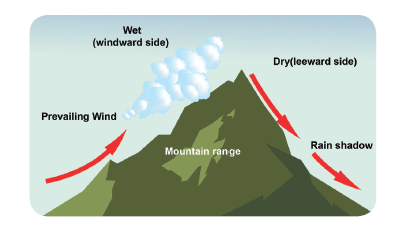
Clouds reflect a large amount of radiation from the sun. This prevents the entry of heat to the earth’s surface. So, in areas generally of cloudless sky like the deserts, temperature is very high. On the other hand under cloudy sky, the temperature is low.
The warm ocean currents raise the temperature of the nearby coastal areas, while the cold current lower the temperature of a place.
The trees release water vapour into the air and makes it cool. Thus forest areas have lower range of temperature throughout the year in contrast to non-forested areas.
The horizontal movement of air along the surface of the earth is called the "Wind" while the vertical movement of air is a called an “Air Current”. The winds always blow from a high pressure area to a low pressure area. Wind is mostly named after the direction from which it blows. For example, the wind blowing from the east is known as the easterly wind or easterlies.
An “anemometer” records wind speed while a “wind vane” measures the direction of the wind. The unit of measurement is kilometre per hour or knots
Winds are generally classified into the following four major types:
Planetary winds
Periodic winds
Variable wind
Local wind
The winds which constantly blow in the same direction throughout the year are called the Planetary winds. They are also called as permanent winds or the prevailing winds. These winds include Trade winds, Westerlies and Polar Easterlies.
Trade winds blow from the subtropical high pressure belt to the Equatorial low pressure belt in both the hemispheres. They blow with great regularity, force and in a constant direction throughout the year. These winds were very helpful to traders who depended on the winds while sailing in the seas. And so, they are named as Trade winds.
Find the correlation between the Trade Winds and the location of prominent deserts like Sahara, Atacama etc.
Westerlies are the permanent winds that blow from the tropical high pressure belt to the sub polar low pressure belt in both the hemispheres. They blow from South West to North East in the northern hemisphere and North West to South East in the southern hemisphere. The velocity of westerlies become so vigorous and fast to be called Roaring Forties at 40 degree, Furious Fifties at 50 degree and Screaming Sixties at 60 degree latitudes.
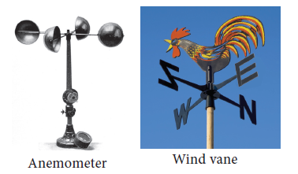
Polar easterlies are cold and dry polar winds that blow from the polar high pressure belt to the sub polar low pressure belt. These are weak winds blowing from North East direction in the Northern Hemisphere and South East direction in the Southern Hemisphere.
G.G.Coriolis
The rotation of the Earth causes deflection of winds from their original path, called the “Coriolis effect”. Winds are deflected to the right in the northen hemisphere and to the left in the southern hemisphere which is known as “Ferrel's law”. This was profounded by William Ferrel. He used “Coriolis force” named after G.G Coriolis (1792-1843) for proving Ferrel’s Law.
The periodic winds are the seasonal winds that change their direction periodically. These winds are caused by the differential heating of land and ocean.
Winds which reverse their direction with the change of seasons are called monsoons. Tropical Monsoon winds of Indian subcontinent is a best example.
The term cyclone is a Greek word meaning “coil of a snake". Cyclones are centres of low pressure where, winds from
the surrounding high pressure area converge towards the centre in a spiral form. Due to the rotation of the earth, the cyclonic winds in the northern hemisphere move in anti clock wise direction, where as they move in clockwise direction in the southern hemisphere.
Cyclones can be classified into
Tropical cyclones
Temperate cyclones
Extra tropical cyclones
Tropical cyclones are known as ‘cyclones’ in Indian ocean, ‘typhoons’ in the western pacific ocean, ‘hurricanes’ in the Atlantic and eastern Pacific ocean, ‘baguios’ in Phillipines and ‘willy willy’ in Australia, Taifu in japan. Tropical cyclones often cause heavy loss of life and property on the coasts and become weak after reaching the landmasses.
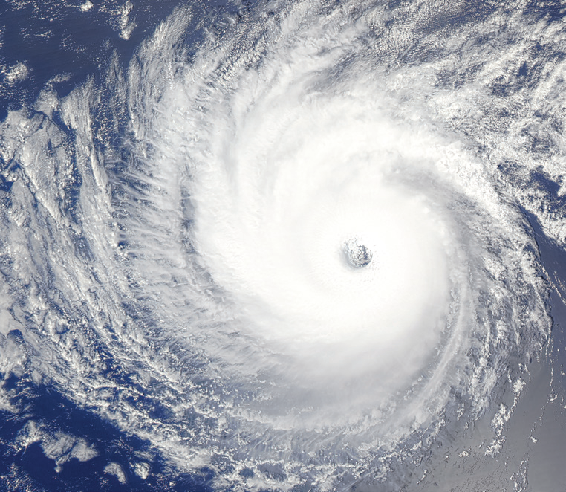
A violent cyclone that hit Odisha, on Friday, 29 October 1999, was one of the most devastating and strongest storm to hit the Indian coast. Winds of up to 260 kph raged for over 36 hours. The winds caused a seven-metre tidal wave that swept more than 20 km inland and brought massive destruction and death to a number of coastal districts in the state of Odisha. It is estimated that more than 10 million people in 12 coastal belt districts were affected by the cyclone. More than 10,000 people lost their lives.
Deliberations for naming cyclones in the Indian ocean region began in 2000 and a formula was agreed upon in 2004. Eight countries in the region Bangladesh, India, Maldives, Myanmar, Oman, Pakistan, Srilanka, and Thailand contributed a set of names which our assigned sequentially whenever a cyclonic storm develops.
Temperate cyclones are formed along a front where hot and cold air masses meet in mid-latitudes between 35 degree and 65 degree North and South . Temperate cyclones do not become weak like the tropical cyclones on reaching the land. Temperate cyclone commonly occurs over the North Atlantic Ocean, North West Europe, Mediterranean basin. Mediterranean basin’s temperate cyclones extend up to Russia and India in winter. In India it is as called western disturbances.
A front is the boundary separating warm and cold air masses. One type of airmass is usually denser than the other, with different temperatures and humidity. This meeting of airmass causes rain, snowfall, hail storm, thunder storm, lightining cold days, hot days, and windy days.
Extra tropical cyclones occur in the latitudes between 30° and 60° in both the hemispheres. They are also called as mid-latitude cyclones. They collect energy from temperature differences which are found in higher latitudes. Extra tropical cyclones produce mild showers to heavy gales, thunderstorms, blizzards, and tornadoes.
Cuddalore and Nagapattinam are always affected by cyclones. Why?
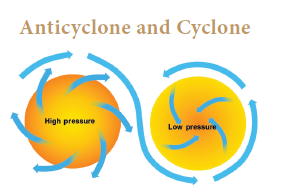
Anticyclones are the opposite of cyclones. Here an area of high pressure region is found in the centre surrounded by low pressure on all sides. The wind from the high pressure region move outwards to the low pressure regions in a spiral form. Anticyclones are often accompanied by cold and heat waves.
Local winds are the winds that blow only in a particular locality for a short period of time, The effect of these local winds are experienced only in that particular area.
Such as land and sea breeze, mountain and valley breeze. They are mostly seasonal and have local names like....
Foehn (Alps-Europe)
Sirocco (North coast of Africa)
Chinook (Rockies-North America)
Loo (Thar Desert- India)
Mistral (Mediterranean sea in France)
Bora (Mediterranean sea in Italy)
According to their height, clouds are classified into the following types
High clouds (6 to 20 kilometer Height)
Middle clouds (2.5kilometer to 6kilometer Height)
Low clouds (ground surface to 25 kilometer height)
These major types of clouds are further divided into different types on the basis of shape and structure.
Cirrus: Detached clouds in the form of white delicate fibrous silky filaments formed at the high sky (8000 meters to 12000 meters) are called Cirrus clouds. These clouds have Ice crystals and are dry and do not give rainfall.
Cirro-cumulus: White patched, sheet or layer like clouds composed of ice crystals.
Cirro-stratus: Smooth milky transparent whitish clouds composed of tiny ice crystals.
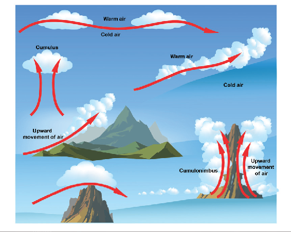
During sunset cirrus clouds look colourful hence they are called as “Mare's Tails”.
Alto-stratus: Thin sheets of grey or blue coloured clouds in uniform appearance. consisting of frozen water droplets
Alto-cumulus: clouds fitted closely together in parallel bands, called as 'Sheep clouds' or wool pack clouds.
Nimbo stratus: These are clouds of dark colour very close to the ground surface associated with rain, snow or sleet.
The only sphere which contains all clouds in the atmosphere is troposphere
Strato-cumulus:- Grey or whitish layer of non-fibrous low clouds found in rounded patches at an height of 2500 to 3000 metres, associated with fair or clear weather
Stratus:- Dense, low lying fog-like clouds associated with rain or snow
Cumulus:- Dome-shaped with a flat base often resembling a cauliflower, associated with fair weather
Cumulo-nimbus:- Fluffy thick towering thunderstorm cloud capable of producing heavy rain, snow, hailstorm or tornadoes
Falling down of condensed water vapour in different forms is called Precipitation. When the dew point is reached in the cloud water droplets become saturated and start to fall. Hence, they fall on the earth as Precipitation.
The climatic conditions/ factors influencing the forms of precipitation mainly are:
Temperature.
Altitude
Cloud type.
Atmospheric conditions.
Precipitation process.
The main forms of precipitation include drizzle, rain, sleet, snow, hail etc.
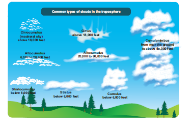
Falling of numerous uniform minute droplets of water with diameter of less than 0.5 mm is called drizzle from low clouds. Sometimes drizzles are combined with fog and hence reduce visibility.
Rain is the most widespread and important form of precipitation in places having temperature above the freezing point. It occurs only when there is abundant moisture in the air. The diameter of a rain drop is more than 5mm.
Sleet refers to a precipitation, in the form of pellets made up of transparent and translucent ice. This precipitation is a mixture of snow and rain
Snow is formed when condensation occurs below freezing point. It is the precipitation of opaque and semi opaque ice crystals. When these ice crystals collide and stick together, it becomes snowflakes.
Hails are chunks of ice (greater than 2cm in diameter) falling from the sky, during a rainstorm or thunderstorm. Hailstones are a form of solid precipitation where small pieces of ice fall downwards. These are destructive and dreaded forms of solid precipitation because they destroy agricultural crops and human lives.
Any thunderstorm which is associated with fall of hail stones is known as hailstorm. Hailstorm is one of the most feared weather phenomenon because it has the potential to destroy plant, trees, crops, animals and human life.
Rainfall is the most predominant type of Precipitation. Moisture laden air masses raise upwards, forms clouds and bring rainfall. Based on the mechanisms of raising the air, there are three types of rainfall.
1. Convectional rainfall
2. Frontal or cyclonic rainfall
3. Orographic rainfall.
Earth surface is intensely heated through solar radiation during the day time. When the air near the earth surface is heated, it rises and expands. This heating results is the formation of convectional air currents. Thus the ascending moist air cools, condenses and results in convectional rainfall. Convectional rainfall occurs regularly in the equatorial region in the evenings. It is also experienced in tropical, sub-tropical and temperate regions in the summer months and on warmer days.
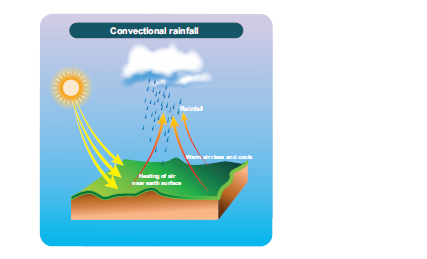
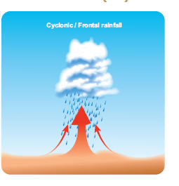
Cyclonic precipitation occurs during cyclones when air masses are made to converge and move upward so that adiabatic cooling occurs. Cyclonic rainfall occurs in tropical as well as temperate regions. When warm and cold air masses converge, condensation and precipitation takes place on the boundary between warm and cold air masses called as Frontal rainfall.
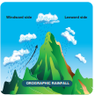
Orographic rainfall, also called relief rainfall, is caused when air is forced to rise against a high mountain. The mountain barriers lying across the direction of air flow, forces the moisture laden air to rise along the mountain slope. This results in the cooling of the air, which leads to the formation of clouds and rain.
This rainfall is called Orographic rainfall. The side of the mountain facing the wind is called the windward side and receives heavy rainfall. It is called the rainfed region. The other side of the mountain that does not face the wind is called the leeward side and receives less rainfall becomes rain shadow region.
Mawsynram is the wettest place of India as it is located in the windward side of the Purvachal hills, whereas Shillong lies on the leeward side and thus receives less rainfall. This is the same, in the case of Mumbai and Pune.
Humidity is an important aspect of the atmosphere because it affects both weather and climate. The amount of water vapour present in the atmosphere is referred to as humidity. Humidity of the atmosphere is high when it has large quantities of water vapour. The amount of water vapour in the atmosphere is called absolute humidity.
When the relative humidity of the air is 100 percent , the air is said to be saturated. Saturated air will not absorb any more water vapour.
The temperature at which air gets saturated is called dew point.
Humidity of the atmosphere is measured by the wet and dry bulb thermometer also called the Hygrometer
Absolute humidity is expressed in terms of grams of water vapour present per cubic metre of air. Relative humidity is expressed in percentage.
Atmosphere is a thin layer of gases that surrounds the earth.
The major gases in the atmosphere are Nitrogen (78 percent ) and oxygen (21 percent )
Five Layers of the atmosphere are Troposphere, stratosphere, mesosphere, thermosphere and exosphere
Atmosphere gets heated through conduction.
Wind is the horizontal movement of air
Wind blows from high pressure belt to low pressure belt.
The 4 types of winds are permanent (planetary), periodic, local and variable winds.
Cyclone is an area of low pressure surrounded by high pressure
Anticyclone is an area of high pressure area surrounded by low pressure.
Clouds: A visible mass of Condensed water vapour floating in the air
All precipitation occurs from clouds
According to height clouds are classified into High clouds, Middle clouds and low-clouds
The main forms of precipitation are drizzle, rain, snow, sleet, hail etcetera.